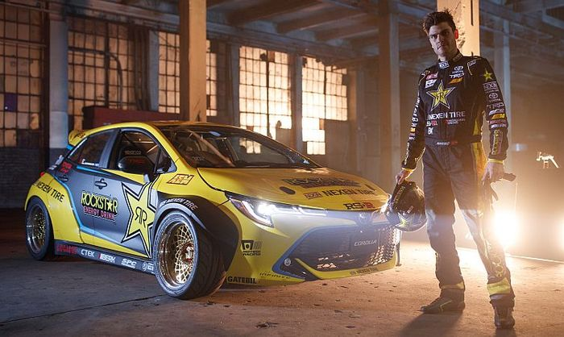
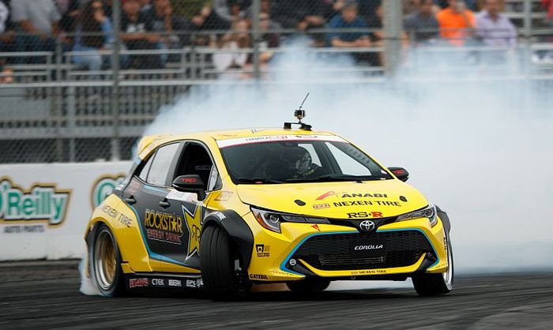

Fredric Aasbo's New Ride Is A 1000bhp Toyota Auris Drift Machine
The Toyota Auris isn't exactly a car to get your pulse racing, but this one is a little different...

The new Auris may be much more interesting to look at than the last one, but without Toyota producing a hot GRMN version, it’s unlikely to entice the average petrolhead.
But what we have here is not your average Auris. Well, technically it’s a Corolla - as the car is referred to in some markets - but that’s not we mean. This one’s been converted to rear-wheel drive and given 1000bhp, so Fredric Aasbo can go very sideways in it while competing in the Formula Drift championship.
Built by Papadakis Racing racing, it packs a 2.7-litre 2AR-FE inline-four, hooked up to a four-speed manual gearbox. Thanks to the fitting of a Borg Warner EFR 9174, bigger injectors, new fuel pumps and much more besides, it makes that magic 1000bhp figure.
If you’re feeling a sense of deja vu, there’s a good reason why: Papadakis built something very similar using the previous-generation Corolla/Auris last year. But the team didn’t just take that car and slap on the new hatchback’s more expressive face. Nope: they were given a pre-production shell in secret, into which the engine and rear-drive powertrain of the old car were transplanted. A whole new wide-body conversion kit had to be fabricated for the vehicle too.

Incredibly, all of this was done in just three months. And how about this as a reward for all that hard work: at the opening round of the 2018 series in Long Beach, Fredric Aasbo drifted the car to victory.
Related Posts
Jaguar Has Killed Off The Supercharged V6 XE And XF
You're Probably Not Having As Bad A Day As This Aston Martin DBS Owner
US Car Makers Want To Make Premium Petrol The New Minimum
This Unique 1967 Corvette L88 Is The US Legend You Can’t Drive
This Dodge Demon Isn't So Handsome After Hitting Parked Cars
Fredric Aasbo's New Ride Is A 1000bhp Toyota Auris Drift Machine